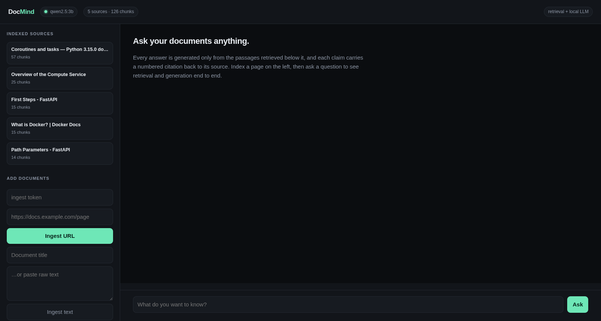
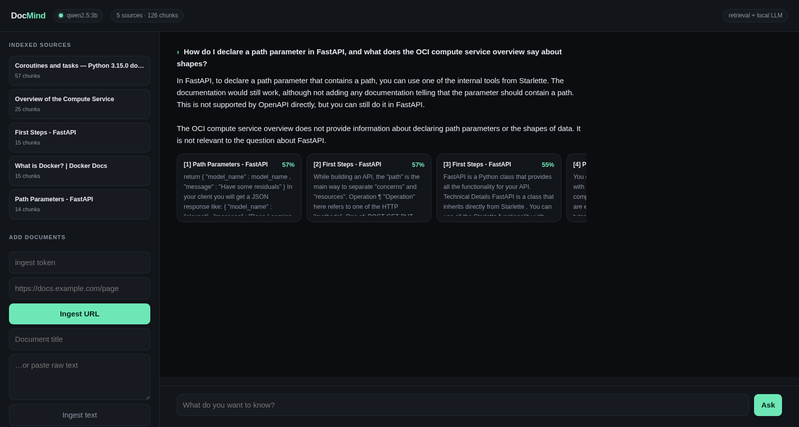

EN
ID
DocMind · retrieval-augmented generation
Live demo
Source
FastAPI · ChromaDB · local LLM


Retrieval
Embeddings
Generation
Service
Hardware
Latency
129.225.4.69
Source on GitHub
Darren Lin — main portfolio